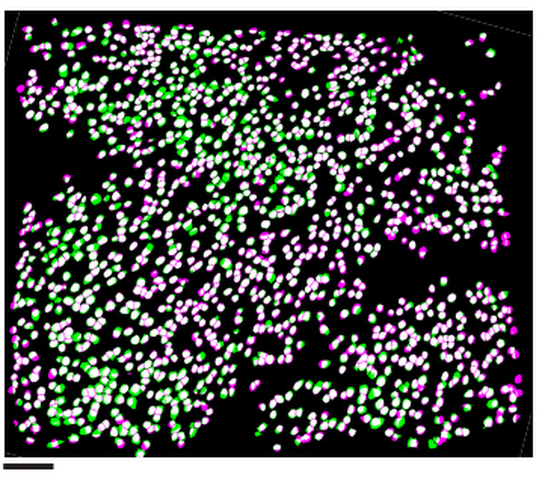
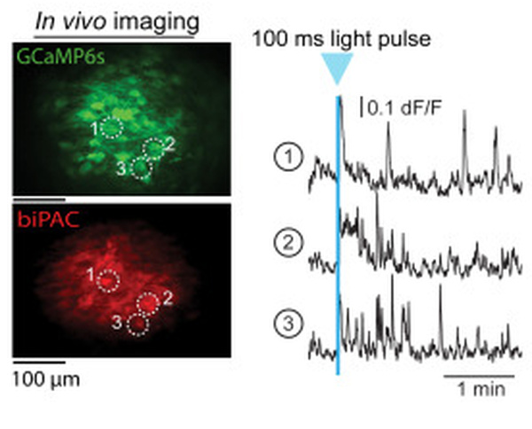
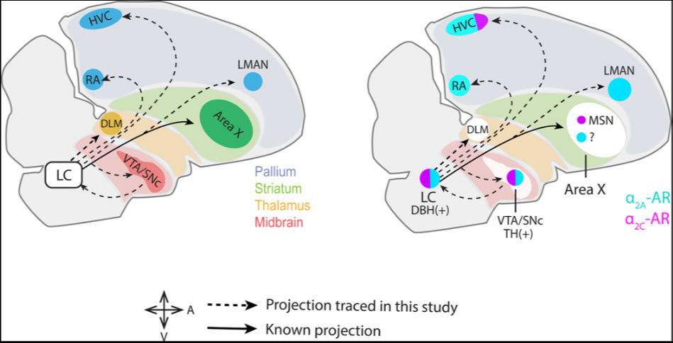
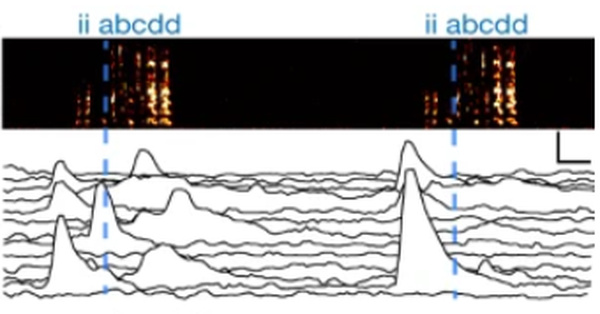

I'm a K99 fellow in the Andermann lab, where I study interoception. I'm interested in adapting new optical tools and molecular sensors to understand how chronic changes re-shape brain activity. I use tools like FLIM, alignment of 2P imaging to gene expression, and deep brain imaging. I'm currently applying these tools to better understand how pain and hunger re-model the brainstem.
I was born and raised in Costa Rica, and did my PhD in the Mooney lab at Duke, where I used miniature microscopes to show how striatal activity shapes motor variability.
Recent updates
- Aug 2026EASI-PASS, our tool for linking 2p imaging to mRNA expression, is now up on bioRxiv!
- Aug 2026Awarded a BBRF Young Investigator Grant from the Brain & Behavior Research Foundation.
- Apr 2026Received the Torsten Wiesel Outstanding Postdoc Award.
- Sep 2025Selected to be one of The Transmitter's Rising Stars of Neuroscience.
- Jul 2025Co-chairing GRS Neuromodulation 2027 in Barcelona, join us!
Publications
Selected

Preprint · bioRxiv · 2026


Journal of Comparative Neurology · 2022

Outreach
Revista Costarricense de Psicología · 2025
Journal of STEM Outreach · 2021
Other collaborations and previous work
Cell Reports · 2018 · code
Full list on Google Scholar